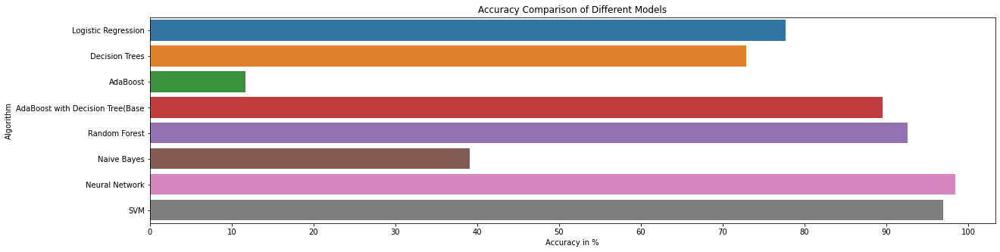

Start with your soil
Enter the nutrient and pH readings from a soil test, or use the sample values to explore.
Tell us a little about your field. We’ll find the crops that look like the best fit for your growing conditions.
Find a crop for my fieldA recent soil test and a rough weather estimate are a great place to start.
Small clues from your field can help you explore which crops may suit your season.
Enter the nutrient and pH readings from a soil test, or use the sample values to explore.
Share the usual temperature, humidity and rainfall for your growing season.
See crop profiles that look similar, then check local advice before planting.
The project notebook compares several machine-learning approaches across 22 crop labels. Its saved chart is shown here for context; the interactive preview above is a separate, transparent crop-profile matcher.
